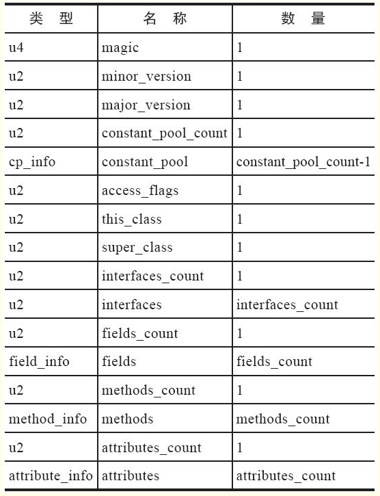

类文件结构
Class类文件的结构
Class文件是一组以8个字节为基础单位的二进制流，各个数据项目严格按照顺序紧凑地排列在文件之中，中间没有添加任何分隔符，这使得整个Class文件中存储的内容几乎全部是程序运行的必要数据，没有空隙存在。
Class文件格式采用一种类似于C语言结构体的伪结构来存储数据，这种伪结构中只有两种数据类型：“无符号数”和“表”。
无符号数属于基本的数据类型，以u1、u2、u4、u8来分别代表1个字节、2个字节、4个字节和8个字节的无符号数，无符号数可以用来描述数字、索引引用、数量值或者按照UTF-8编码构成字符串值。
表是由多个无符号数或者其他表作为数据项构成的复合数据类型，为了便于区分，所有表的命名都习惯性地以“_info”结尾。

魔数与Class文件的版本
头部固定魔数0xCAFEBABE：使用魔数而不是扩展名来进行识别主要是基于安全考虑，因为文件扩展名可以随意改动。
紧接着魔数的4个字节存储的是Class文件的版本号：第5和第6个字节是次版本号（Minor Version），第7和第8个字节是主版本号（Major Version）。高版本的JDK能向下兼容以前版本的Class文件，但不能运行以后版本的Class文件
常量池
由于常量池中常量的数量是不固定的，所以在常量池的入口需要放置一项u2类型的数据，代表常量池容量计数值（constant_pool_count）。这个容量计数是从1而不是0开始的，常量池容量（偏移地址：0x00000008）为十六进制数0x0016，即十进制的22，这就代表常量池中有21项常量，索引值范围为1～21。
常量池中主要存放两大类常量：
- 字面量（Literal）：文本字符串、被声明为final的常量值
- 符号引用：被模块导出或者开放的包（Package）
- 类和接口的全限定名（Fully Qualified Name）
- 字段的名称和描述符（Descriptor）
- 方法的名称和描述符
- 方法句柄和方法类型（Method Handle、Method Type、Invoke Dynamic）
- 动态调用点和动态常量（Dynamically-Computed Call Site、Dynamically-Computed Constant）
编译时，并不像C和C++那样有“连接”这一步骤，当虚拟机做类加载时，将会从常量池获得对应的符号引用，再在类创建时或运行时解析、翻译到具体的内存地址之中。截至JDK 13，常量表中分别有17种不同类型的常量。
访问标志
在常量池结束之后，紧接着的2个字节代表访问标志（access_flags），这个标志用于识别一些类或者接口层次的访问信息，包括：这个Class是类还是接口；是否定义为public类型；是否定义为abstract类型；如果是类的话，是否被声明为final；等等。
类索引、父类索引与接口索引集合
类索引（this_class）和父类索引（super_class）都是一个u2类型的数据，而接口索引集合（interfaces）是一组u2类型的数据的集合，Class文件中由这三项数据来确定该类型的继承关系。
字段表集合
字段表（field_info）用于描述接口或者类中声明的变量。
方法表集合
方法表（meathod_info）用于描述接口或者类中声明的方法。 方法里的Java代码，经过Javac编译器编译成字节码指令之后，存放在方法属性表集合中一个名为“Code”的属性里面。
属性表集合（attribute_info）
Class文件、字段表、方法表都可以携带自己的属性表集合，以描述某些场景专有的信息。
Code
Java程序方法体里面的代码经过Javac编译器处理之后，最终变为字节码指令存储在Code属性内。譬如接口或者抽象类中的方法就不存在Code属性，如果方法表有Code属性存在。
Exceptions
Exceptions属性的作用是列举出方法中可能抛出的受查异常（Checked Excepitons），也就是方法描述时在throws关键字后面列举的异常。
LineNumberTable
LineNumberTable属性用于描述Java源码行号与字节码行号（字节码的偏移量）之间的对应关系。
LocalVariableTable
LocalVariableTable：如果没有生成这项属性，最大的影响就是当其他人引用这个方法时，所有的参数名称都将会丢失，譬如IDE将会使用诸如arg0、arg1之类的占位符代替原有的参数名。
ConstantValue
通知虚拟机自动为静态变量赋值。